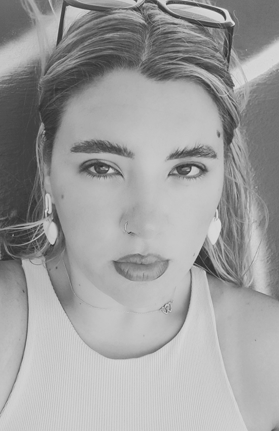
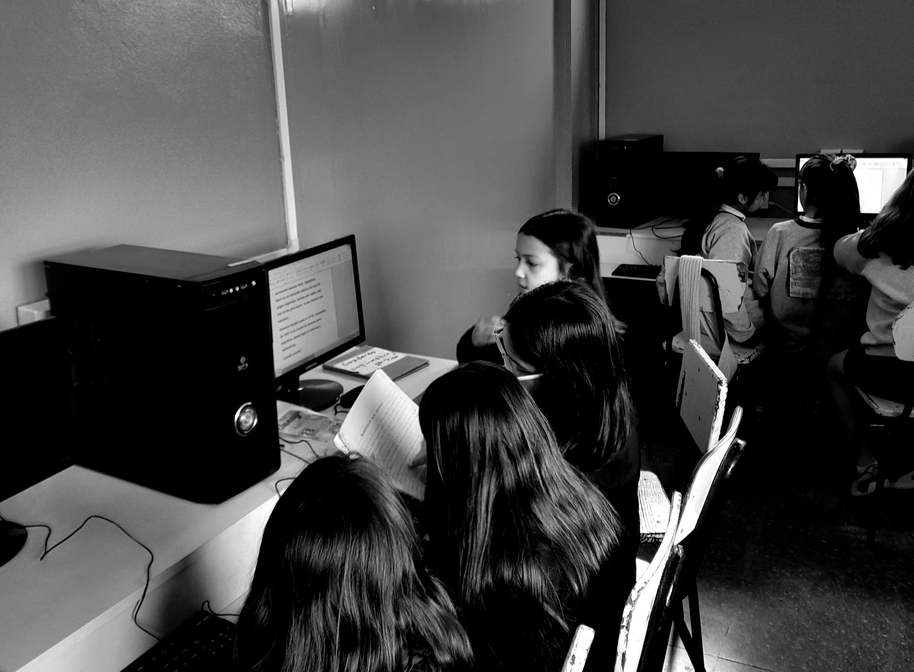
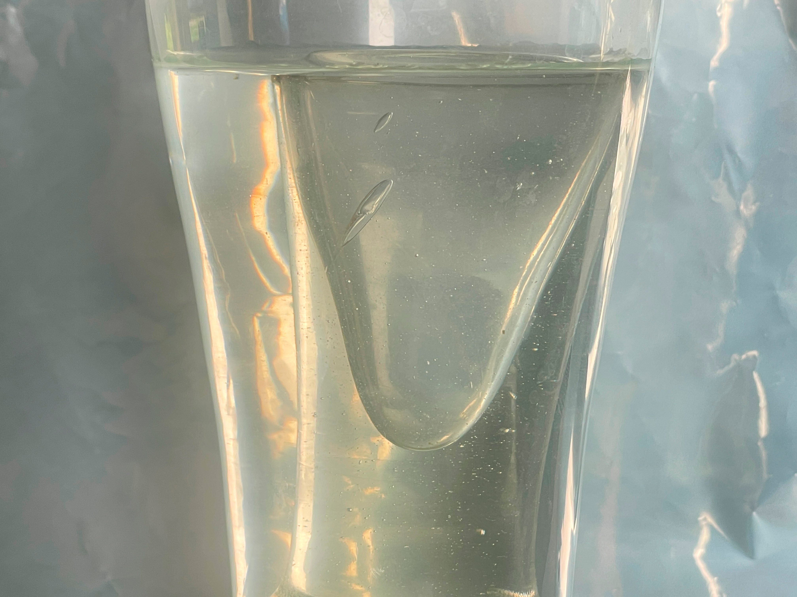
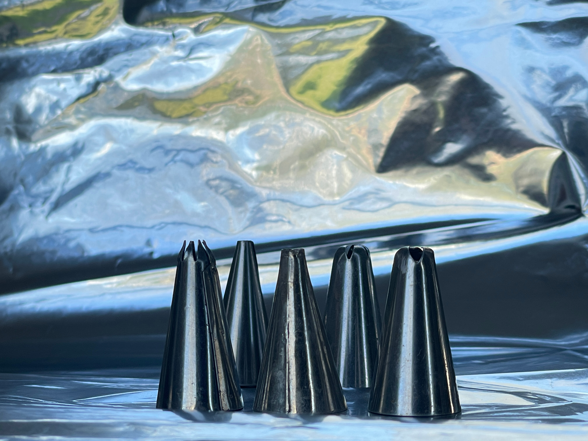

SOBRE MÍ
Estudiante de Diseño Gráfico. Me gusta crear, aprender y enseñar. Disfruto trabajar con ideas, imágenes y herramientas tecnológicas para comunicar de forma clara y creativa. Me interesa el diseño como un espacio para expresar, organizar y transmitir mensajes que generen comprensión y aprendizaje.
Me moviliza la posibilidad de transformar lo cotidiano en una experiencia significativa. Suelo prestar atención a lo que ocurre en los pequeños gestos, en los ritmos de aprendizaje y en las formas de expresión de cada persona. Aporto compromiso, escucha y una mirada abierta para construir espacios donde las ideas puedan crecer.
Como persona, me encuentro en un proceso de crecimiento y descubrimiento personal, donde busco comprenderme y fortalecer mi identidad a través de lo que hago y aprendo cada día. Valoro la sensibilidad, la empatía y la creatividad como herramientas para relacionarme con los demás y con mi entorno. Me interesa seguir desarrollándome desde la curiosidad y la reflexión, confiando en que cada experiencia aporta nuevas formas de mirar, de sentir y de construir mi propio camino.
EXPERIENCIA LABORAL
DOCENTE
NIVEL PRIMARIO
Área Informática Estudiantes de 4.º y 5.º grado (9 a 11 años) Titular 8 módulos Colegio de la Comunidad Santalucina / Obispado de Quilmes 2023 / Actualidad
Introducción al pensamiento visual y a la morfología de las formas en actividades digitales. (espacio, composición y morfología) Articulación y desarrollo de proyectos gráficos escolares, con el diseño y la comunicación visual. Realización y diseño de revistas. Fomento de la observación, la composición y la organización visual en producciones escolares. Uso de herramientas digitales con fines educativos y creativos. (Microsoft Word/Excel/Power Point)
AUXILIAR DE CÁTEDRA
UNIVERSIDAD NACIONAL DE LANUS
Medios Expresivos III 2025/Actualidad

DATOS ACADÉMICOS
ESTUDIOS CURSADOS
LICENCIATURA EN DISEÑO Y COMUNICACIÓN VISUAL
UNIVERSIDAD NACIONAL DE LANUS
Actualmente cursando el cuarto año de la carrera
HABILIDADES
Comunicación clara
Conducción de grupos
Aprendizaje mutuo.
Escucha activa, reflexiva y apertura al intercambio.
Actitud paciente y cordial.
PASIÓN POR LA FOTOGRAFÍA
La fotografía es una de las formas en las que canalizo mi mirada creativa y mi sensibilidad por la composición visual. Me apasiona explorar el equilibrio entre luz, forma y encuadre, buscando que cada imagen tenga intención y narrativa. Sin embargo, donde encuentro mayor libertad es en la fotografía experimental: un espacio donde puedo romper reglas, probar técnicas no convencionales y transformar lo cotidiano en algo inesperado, expresivo y único.
Trabajo desde la observación y la intuición, prestando especial atención a los detalles que muchas veces pasan desapercibidos. Mi proceso creativo combina experimentación, exploración visual y una búsqueda constante de nuevas formas de representar la realidad. Me gusta construir imágenes con intención, cuidando la composición y el concepto, pero también dejando espacio al error, al juego y a lo inesperado, entendiendo la fotografía como un territorio de descubrimiento y expresión personal.

